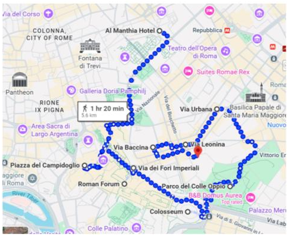
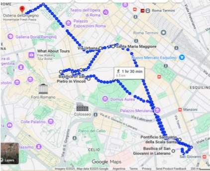

Roma

- Campidoglio: visitar Museos Capitolinos y Santa Maria di Aracoeli. Desde allí arriba, vistas al Foro, Fori Imperiali, Columna de Trajano, Mercado de Trajano. Luego bajar por las escaleras hasta Via dei Fori Imperiali que lleva al Coliseo (impresionante por fuera, ideal para fotos).
- Recomendación: cruzar la calle hasta Parque Colle Oppio o Via Nicolas Salvi para vistas al Coliseo.
- Vistas gratuitas: Rooftop Terraza Italia.
- Otras cosas para ver: Barrio de Monti, Via Urbana, Via Leonina, Via Baccina, Sant'Agata dei Goti, San Pietro in Vincoli.

- San Giovanni in Laterano - Scala Santa - Basílica de San Clemente: desvío recomendable, se puede regresar en metro o bicicleta.
- Santa Maria Maggiore (tumba Francisco), accesible desde Monti o Parco Colle Oppio.
- Altar de la Patria: se puede subir gratis para ver vistas hasta el Coliseo.
- Fontana di Trevi: ir a la tienda de Benetton justo enfrente, subir al 2do piso y asomarse a una ventana.
Compras:
- Tienda Departamental COIN: Via Cola Di Rienzo 173 (Zona Vaticano), Piazzale Appio 7 (Zona San Giovanni)
- Rinascente (tienda con varias marcas): Via del Tritone 61 (Centro)
- Calles con negocios: Via del Tritone (Piazza Barberini → Via del Corso), Via del Corso (entre Piazza del Popolo y Piazza Venezia)
- Zara: Via del Corso 189 (Centro)
- Via Cola di Rienzo (Zona Prati, Vaticano) y Via Ottaviano: locales de marcas italianas y ferias
- Sandro Ferrone: Via del Babuino 49
- Calle Buenos Aires (zapatos) cruzando la Via Borgese